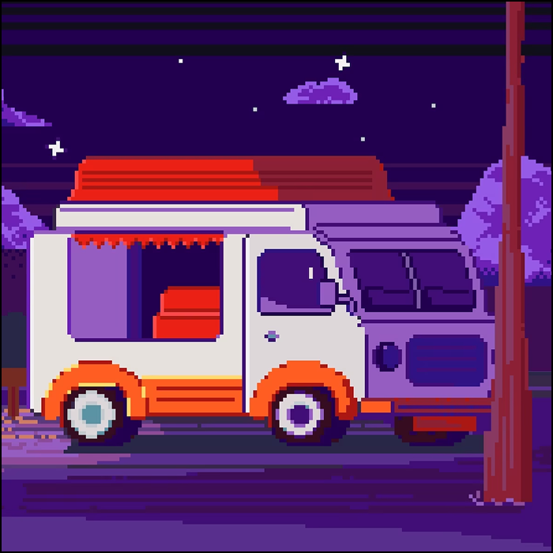

Фритрек и нулевой спринт: Подготовка к работе

</HTML>Это было самое начало пути. На этом этапе важно было проникнуться основами и настроиться на учёбу. И, возможно, подумать, как новые знания могут повлиять на ваше будущее.
В начале мне хотелось быстрее увидеть результат. Первые теги и простые страницы казались маленьким шагом, но именно с них начался путь к пониманию того, как устроен сайт.